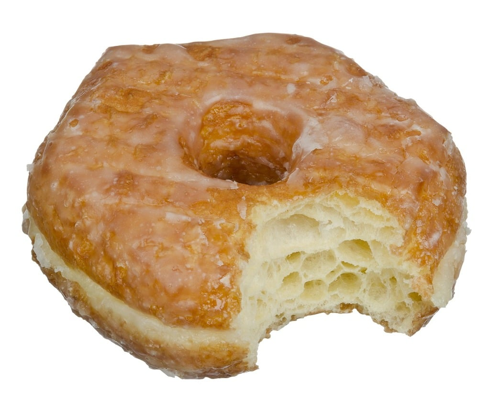
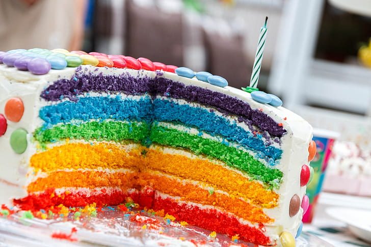
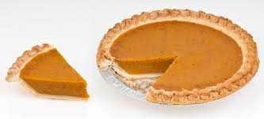

Celina's Favorite Foods
There's nothing better than savoring one of your favorite comfort foods! Below, you'll find some of Celina's favorite foods. I hope this page inspires you to think about and appreciate some of your favorite foods. Bon Appetit!
Donuts
Pasta

Birthday Cake
Pie

If you'd like to learn more about the history of pie, visit the Wikipedia page about pie! This delicious dessert is older than you might think!